中国史②（秦・漢帝国）
ポイント総復習
戦国の七雄による激しい争いを制して中国を初めて統一した「秦」、そしてその後に長期政権を築き、現代の中国文化の礎となった「漢（前漢・後漢）」。それぞれの王朝がどのような統治システム（郡県制や郡国制）を用いたのか、その違いが試験でよく狙われます。
1. 秦の統一と急進的な中央集権
前221年、戦国の七雄の1つである「秦」の王・政が中国を統一し、初めて「皇帝」という称号を使用しました。これが始皇帝です。彼は法家の李斯（りし）を丞相（じょうしょう：行政の長官）に登用し、急激な中央集権化と法治主義を推進しました。
前221年〜：秦（しん）の統一政策
- 郡県制の実施：全国を36の郡に分け、その下に県を置きました。世襲の諸侯に土地を任せるのではなく、中央から皇帝の命を受けた官僚を派遣して直接統治する、強力な中央集権体制です。（※周の「封建制」との違いに注意）
- 各種の統一：貨幣（半両銭）、度量衡（長さ・容積・重さの基準）、文字（小篆）、車軌（馬車の車輪の幅）などを全国で統一し、経済や流通を円滑にしました。
- 焚書・坑儒（ふんしょ・こうじゅ）：法家思想に基づく厳格な統治を行うため、実用書以外の書物を焼き（焚書）、政府を批判する儒学者たちを生き埋めにしました（坑儒）。激しい言論統制です。
- 対外政策：北方の騎馬遊牧民である匈奴（きょうど）の侵入を防ぐため、戦国時代からあった長城を修築・連結して万里の長城を築きました。
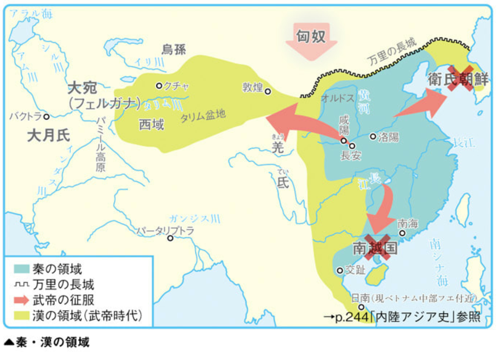
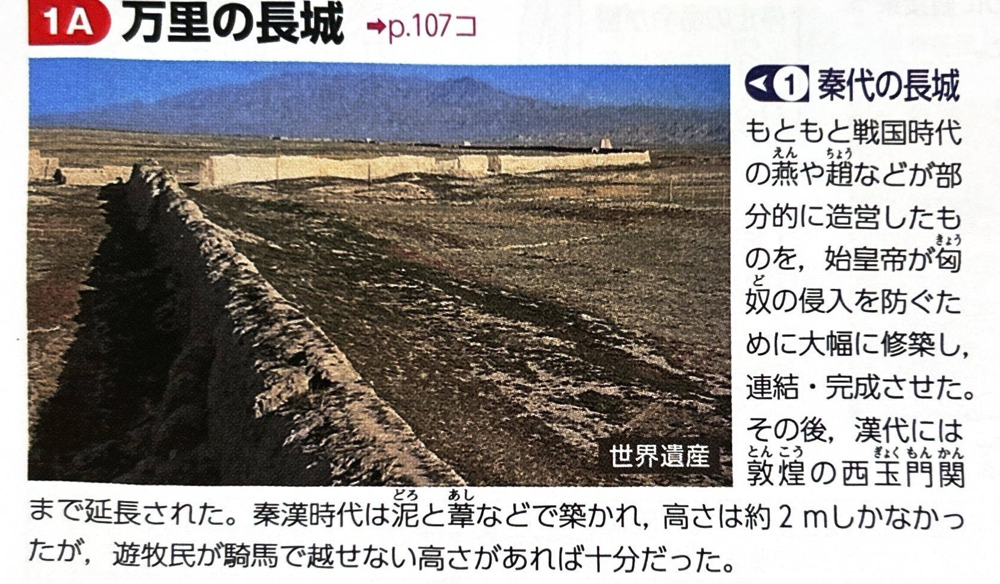
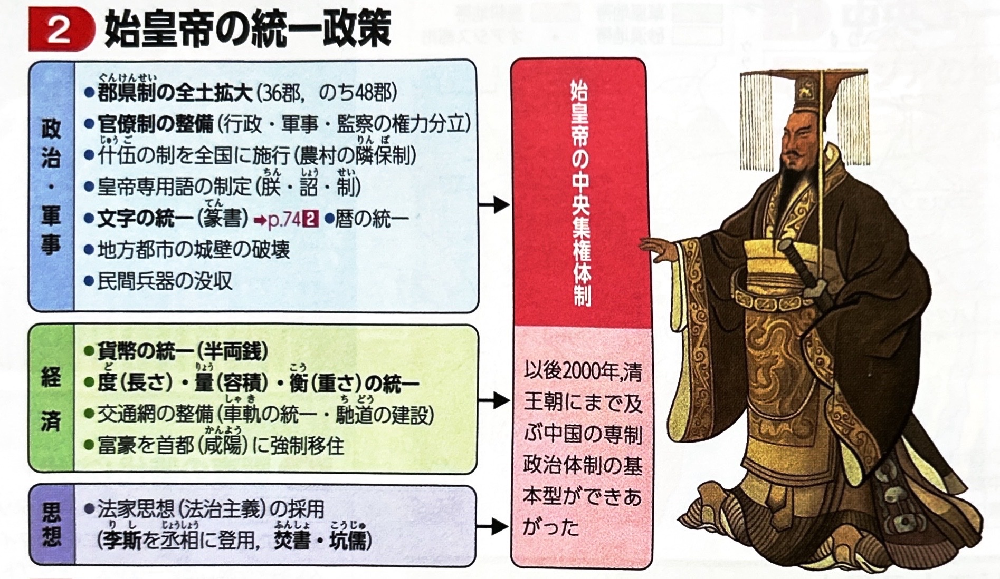
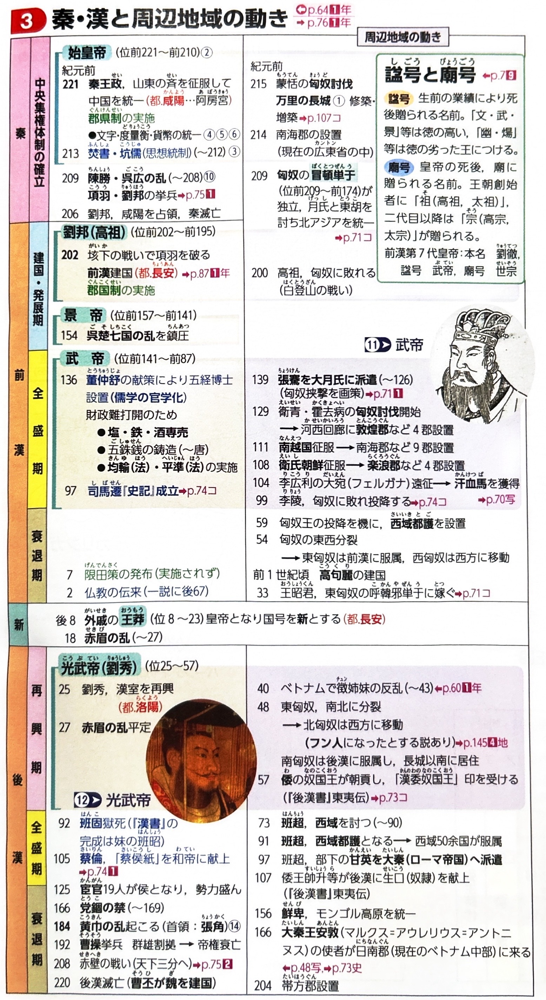
2. 前漢の成立と武帝の最盛期
秦の滅亡後、農民出身の劉邦（高祖）と、楚の貴族出身である項羽が争いました（楚漢戦争）。これに勝利した劉邦が前202年に漢（前漢）を建国します。
| 人物・出来事 | 主な政策と特徴 |
|---|---|
| 高祖（劉邦） 都：長安 |
急激な中央集権で失敗した秦の反省から、直轄地には官僚を派遣する「郡県制」を用い、遠方の領地には一族や功臣を諸侯として封じる「封建制」を併用する郡国制を採用しました。 |
| 呉楚七国の乱 （前154年） |
前漢が次第に諸侯の権力を削り、中央集権化（郡県制への移行）を進めたことに対し、諸侯が起こした反乱。これを鎮圧したことで、前漢の実質的な郡県制（中央集権）が確立しました。 |
| 第7代 武帝 （最盛期） |
|
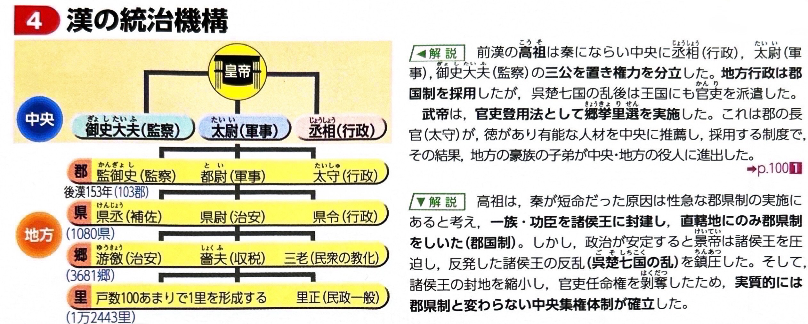
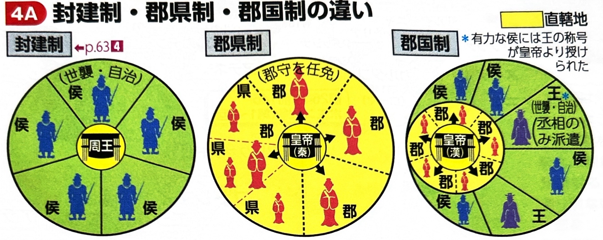
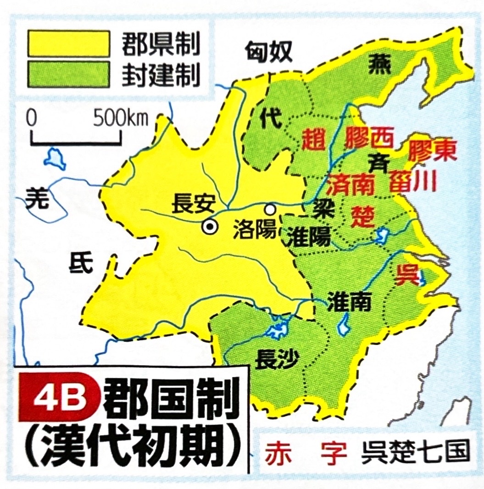
3. 新の建国と後漢の成立
前漢は外戚（皇后の親族）である王莽（おうもう）に国を奪われますが、反乱により短期間で滅び、再び漢王朝が復興します。
8年〜23年：新（しん）
外戚の王莽が前漢を滅ぼして建国。極端な復古主義的政策を強行したため社会が混乱し、農民反乱である赤眉の乱（せきびのらん）が起きて滅亡しました。
25年〜220年：後漢（ごかん）
漢の皇族の血を引く光武帝（劉秀）が、各地の豪族の協力を得て漢王朝を復興しました。都は長安から東の洛陽（らくよう）に移されました。
- 日本との関わり：西暦57年、日本（倭の奴国）からの使者に対し、光武帝が「漢委奴国王」（かんのわのなのこくおう）と刻まれた金印を授与したとされています（志賀島で発見）。
- 後漢の滅亡：2世紀後半、宦官（かんがん：去勢された後宮の仕え）と官僚・知識人が激しく対立した党錮の禁（とうこのきん）により政治が腐敗。184年に太平道を率いる張角を中心とした農民反乱、黄巾の乱（こうきんのらん）が起き、王朝は事実上崩壊し、三国時代へと突入します。
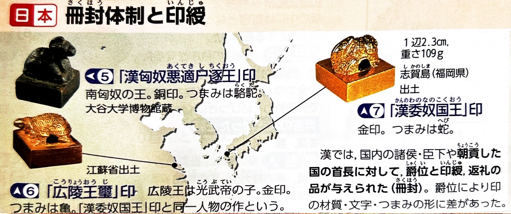
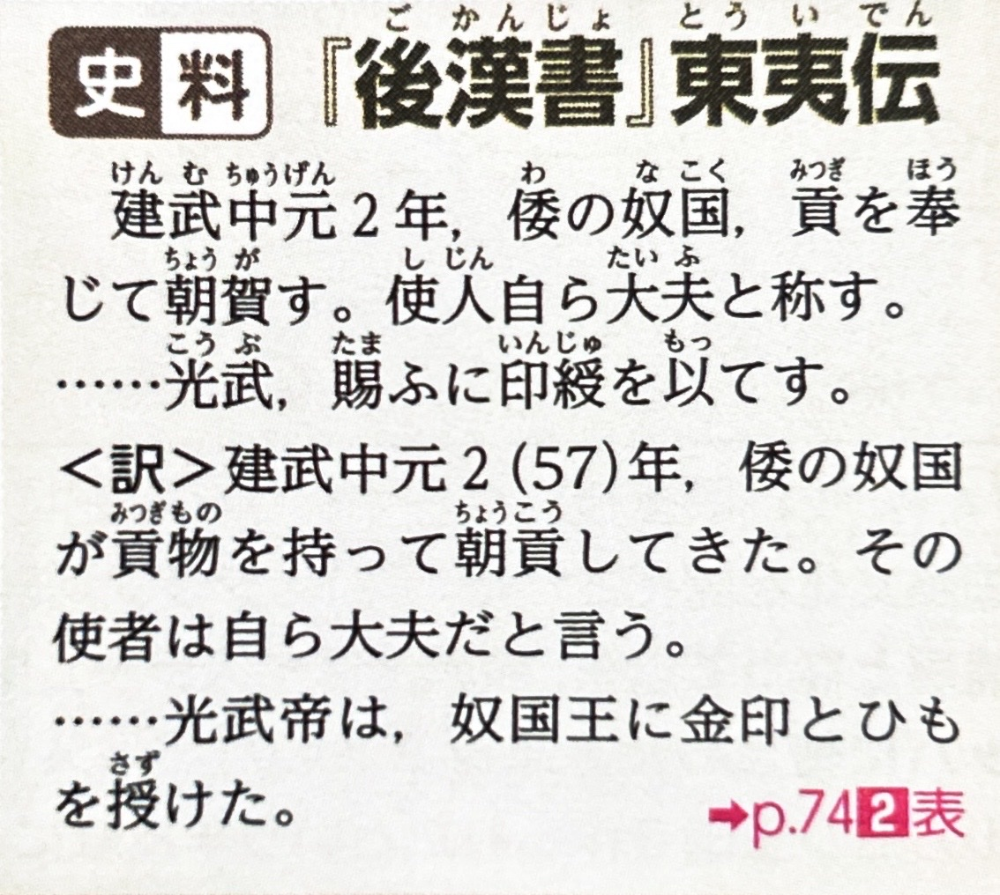
4. 漢代の文化
秦の厳しい思想統制から一転し、漢代には儒教が国家の正統な学問として保護され、歴史書や実用技術も発展しました。
| 分野 | 特徴と代表的な人物・書物 |
|---|---|
| 思想 （儒教の官学化） |
前漢の武帝の時代、儒学者である董仲舒（とうちゅうじょ）の建白により、儒教が国家の正統な学問（官学）とされました。儒教の経典を教える五経博士が設置され、官僚を目指す者の必須教養となりました。（※後漢には、経典の字句を正確に解釈する訓詁学（くんこがく）が発達しました。） |
| 歴史書 |
|
| 実用技術 | 後漢の宦官であった蔡倫（さいりん）が、樹皮やボロ布を用いて製紙法を改良しました。これにより、竹簡や木簡に代わって紙が普及し、文化の発展と伝達に大きく貢献しました。（※この製紙法は、のちにタラス河畔の戦いを経てイスラーム世界へと伝わります。） |
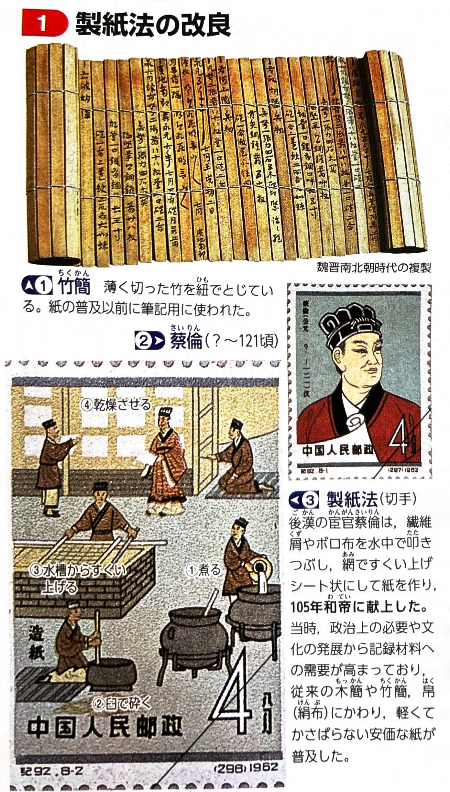
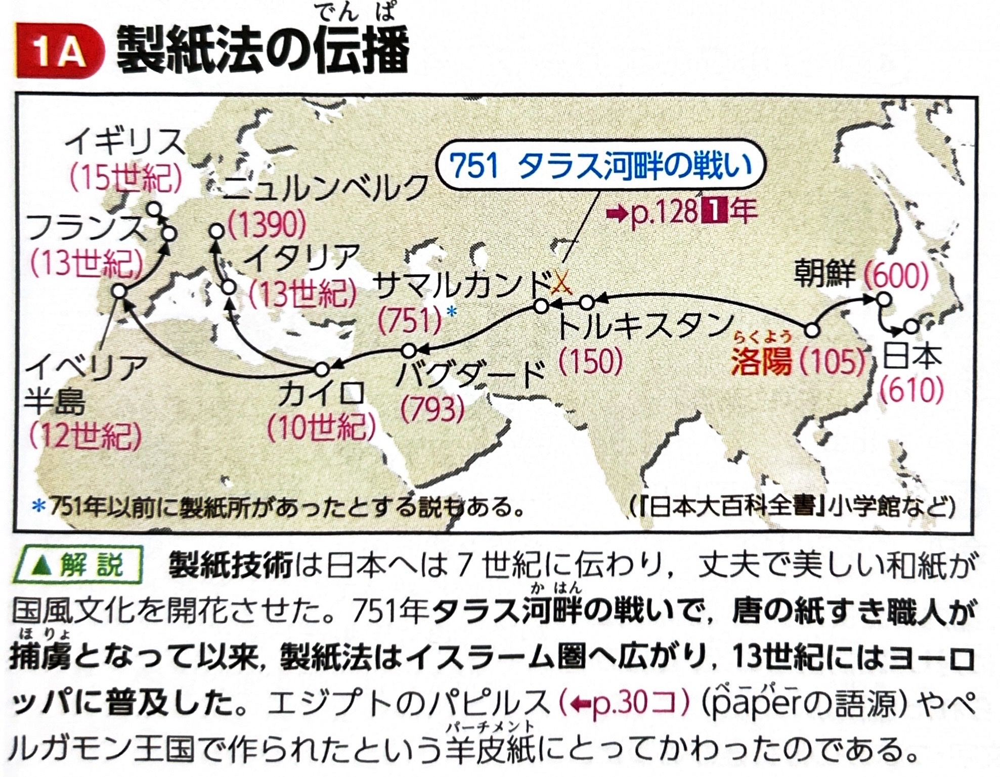
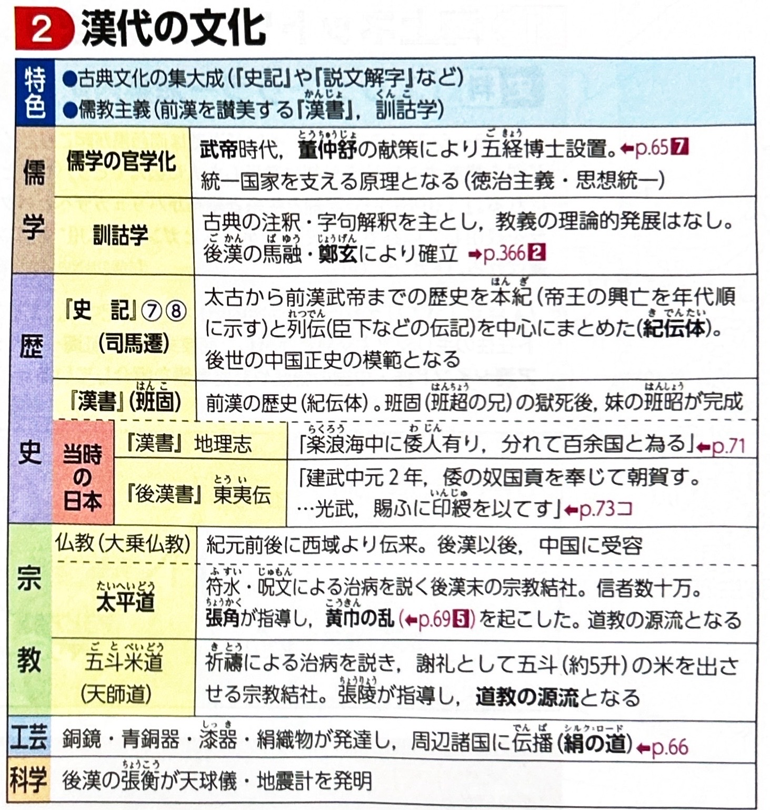
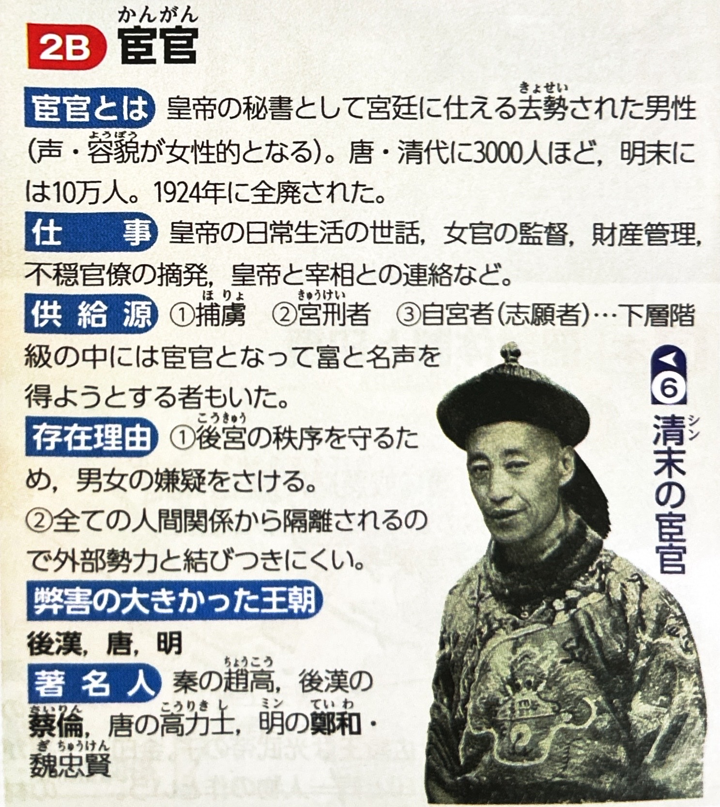